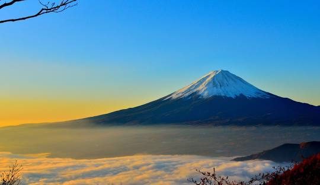
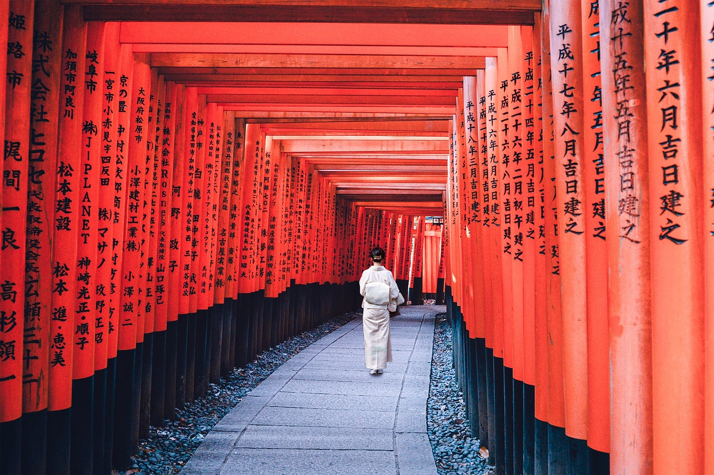

Le mont Fuji est une montagne du centre du Japon qui se trouve sur la côte sud de l'île de Honshū, au sud-ouest de l'agglomération de Tokyo.
Avec 3 776 mètres d'altitude, il est le point culminant du Japon. Situé dans une région où se rejoignent les plaques tectoniques pacifique,
eurasienne et philippine, la montagne est un stratovolcan toujours considéré comme actif, sa dernière éruption certaine s'étant produite fin 1707, bien que le risque éruptif soit actuellement considéré comme faible.

Ce chemin connu pour ses milliers de toriis vermillon formant un tunnel sur la colline sur laquelle le temple est construit.
Ces toriis sont pour la plupart des dons faits par des particuliers, des familles ou des entreprises à Inari.
Le nom des donateurs figure souvent sur les montants du torii1.
Le coût d’un torii valait en août 2016 entre 175 000 et 1 302 000 yens (entre 1 400 et 10 400 euros)1.
La kami Inari représente la protectrice des céréales et plus particulièrement du riz.
Elle est également historiquement associée à l'abondance et la richesse, devenant la patronne des commerces ;
ce qui peut expliquer la présence de ces milliers de toriis offerts par les particuliers et les entreprises japonaises